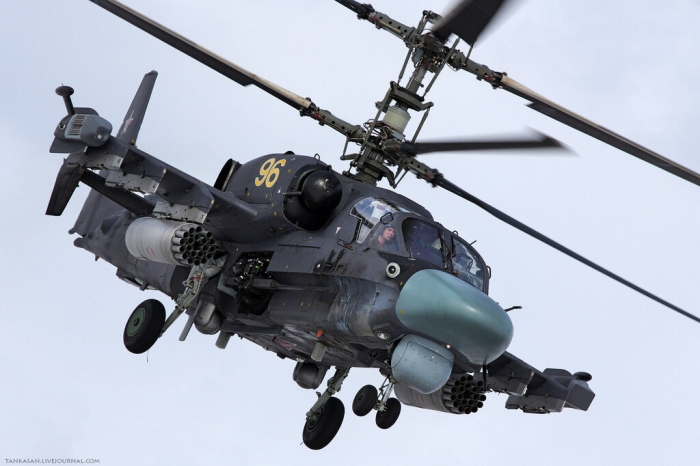
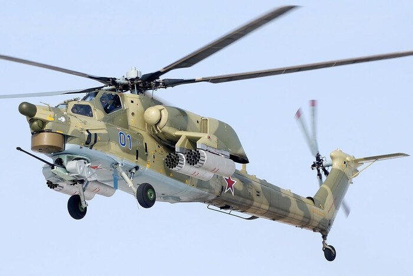
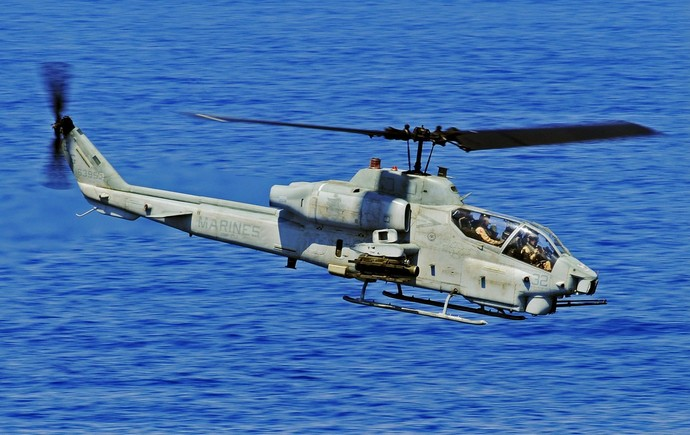
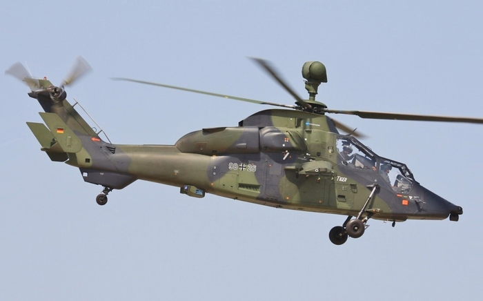
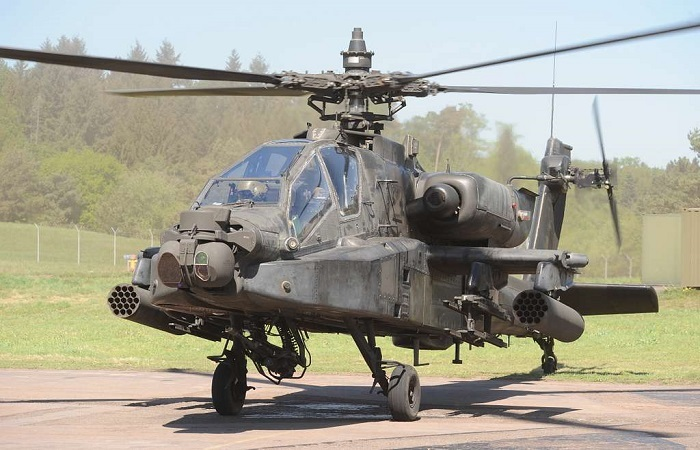
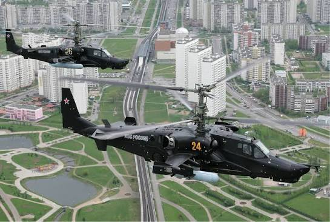
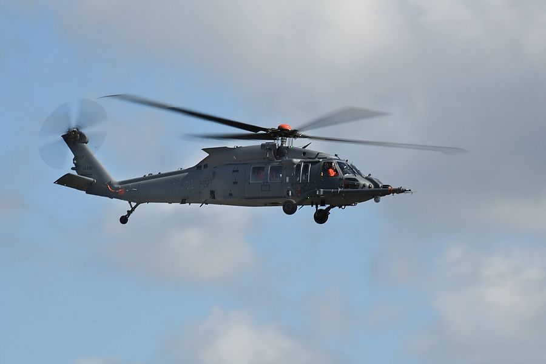

Ka-50Одноместный ударный вертолёт, разработанный в КБ Камова. Первый полёт состоялся в 1982 году, на вооружение он принят в 1995 году.
Главная особенность машины - соосная схема: два несущих винта вращаются в противоположные стороны на одной оси, поэтому хвостовой винт не нужен. Ка-50 стал первым в мире серийным одноместным боевым вертолётом и первым вертолётом с катапультируемым креслом.
Вооружение: 30-мм пушка, противотанковые управляемые ракеты «Вихрь», неуправляемые ракеты и бомбы. Максимальная скорость около 300 км/ч, боевой радиус около 250 км.

HH-60WБоевой поисково-спасательный вертолёт ВВС США, созданный компанией Sikorsky на базе UH-60M «Блэк Хок». Первый полёт состоялся в 2019 году, серийные поставки начались в 2020 году. Он заменяет устаревающие HH-60G «Пейв Хок».
Основная задача машины - эвакуация экипажей сбитых самолётов и раненых из опасных районов, в том числе под огнём противника. Для этого вертолёт оснащён бронезащитой, системой самозащиты, лебёдкой для подъёма людей, увеличенным запасом топлива и штангой для дозаправки в воздухе.
Вооружение: бортовые пулемёты калибра 7,62 мм и 12,7 мм. Максимальная скорость около 290 км/h, боевой радиус около 500 км.
Двухместный ударный вертолёт, разработанный европейским концерном Eurocopter (сейчас Airbus Helicopters) совместно Францией и Германией. Первый полёт опытного образца состоялся в 1991 году, а на вооружение вертолёт принят в 2003 году. Помимо этих стран, его используют Испания и Австралия.
Главная особенность машины - широкое применение композитных материалов, которые составляют большую часть конструкции. Это снижает массу и заметность вертолёта, а ещё делает его устойчивым к повреждениям. Экипаж из двух человек сидит друг за другом: впереди стрелок-оператор, сзади пилот. Вертолёт двухдвигательный, с одним несущим и хвостовым винтом.
Вооружение зависит от версии: французская версия HAP несёт 30-мм пушку, а немецкая UHT рассчитана в первую очередь на борьбу с танками. Вертолёт может нести противотанковые управляемые ракеты (HOT, PARS 3 LR, Spike), неуправляемые ракеты и ракеты «воздух — воздух» Mistral. Максимальная скорость составляет около 290 км/ч.
Американский ударный вертолёт компании Bell, один из первых в мире специализированных боевых вертолётов. Первый полёт состоялся в 1965 году, а на вооружение он поступил в 1967 году и сразу был отправлен во Вьетнам для огневой поддержки пехоты. Позднее его использовали армия и морская пехота США, а также ряд других стран.
Cobra создана на основе знаменитого вертолёта UH-1 «Ирокез», от которого она унаследовала двигатель и трансмиссию. Узкий фюзеляж делает её малозаметной мишенью. Экипаж из двух человек сидит друг за другом: впереди стрелок, сзади пилот.
Вооружение первых версий: пулемёты и гранатомёты в подвижной башне под носом, блоки неуправляемых ракет. Позднее вертолёт получил противотанковые ракеты TOW. Максимальная скорость составляет около 277 км/ч.